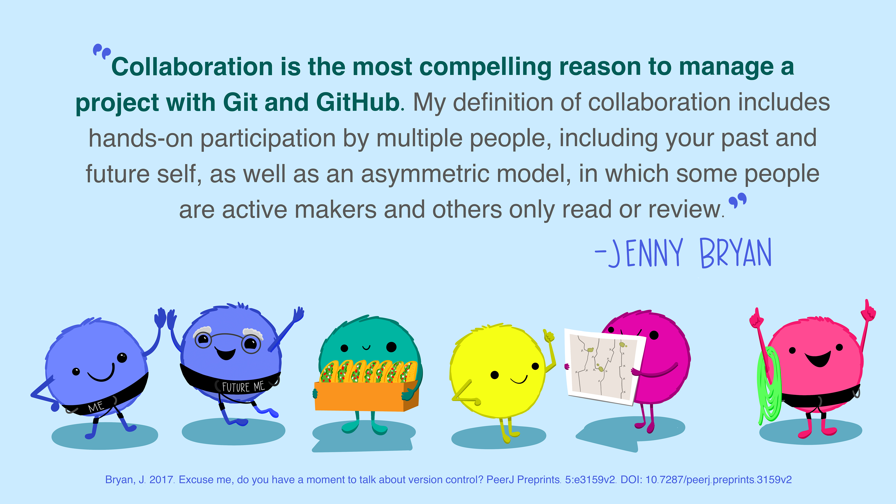
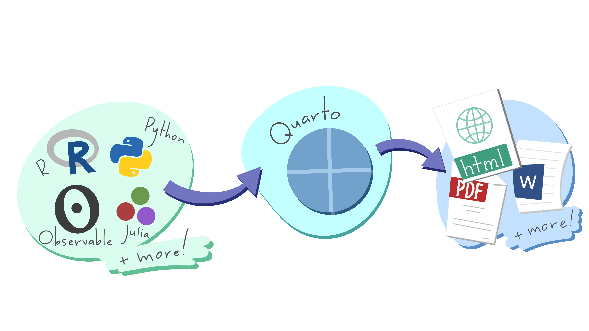
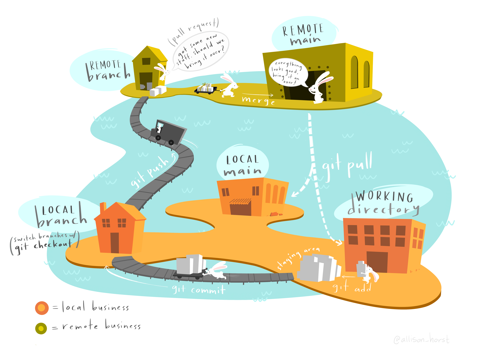
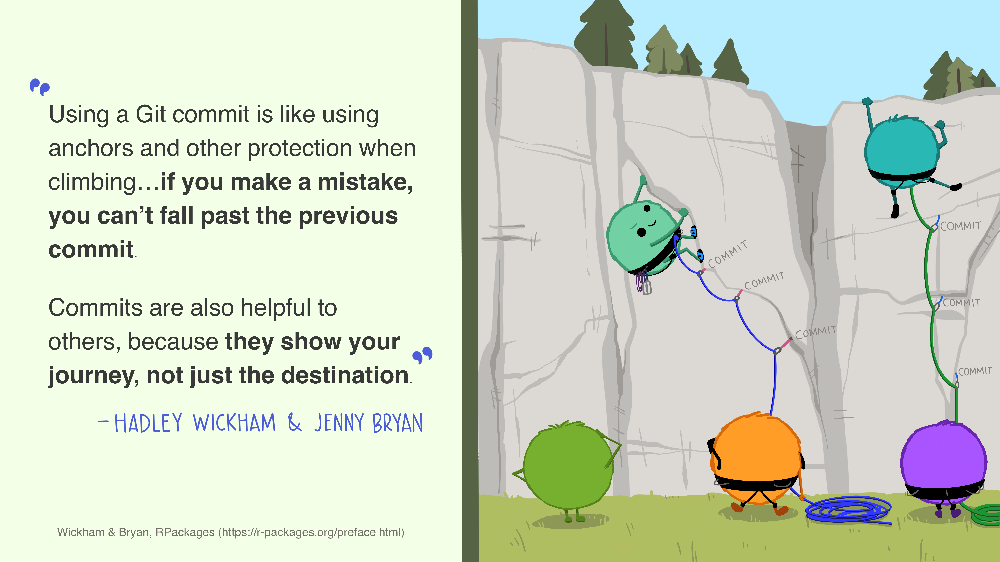
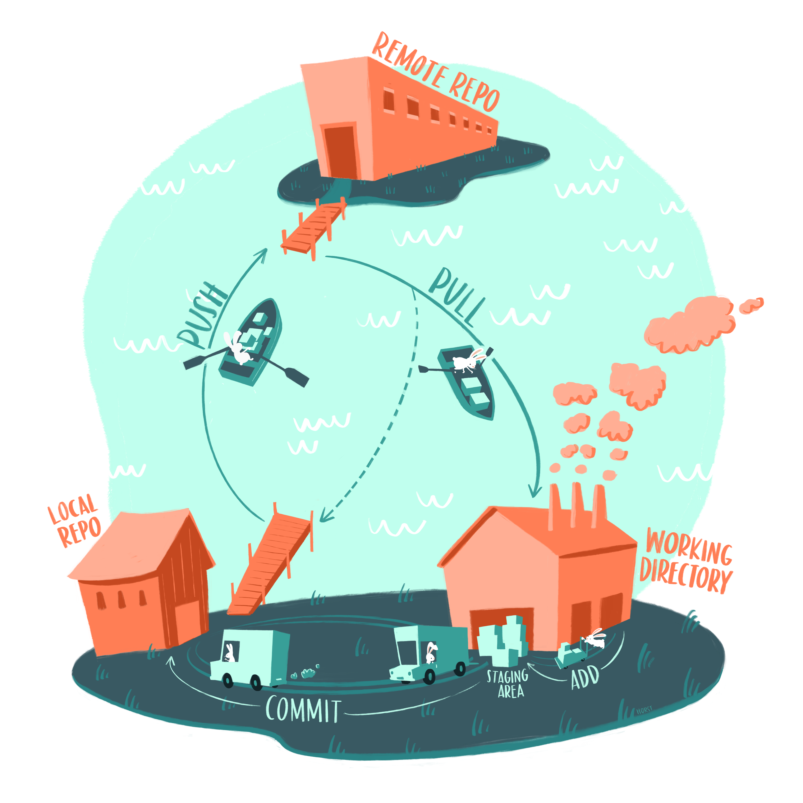
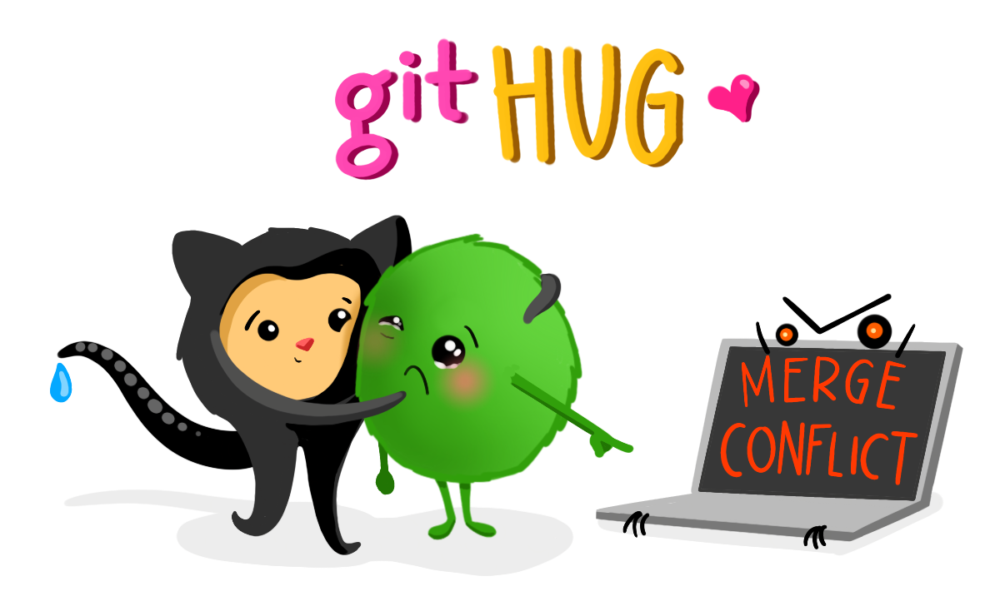

%%{init: {"theme": "neutral"} }%%
flowchart LR
A[contenu dans branch master]
A -->|"<i>clone<i/>"| B(modifications)
B -->|"<i>pull request</i>"| D
A -->|"<b>master est protégé<b/>"| D[master modifié]
Outils
Quels outils pour travailler ? Il n’y en a pas 3 000 mais quelques uns incontournables. En bref : un projet dans RStudio et R, github, github desktop.
Les illustrations sont de Alison Horst.
Règle 1 : le travail est divisé en projets. Un projet est un dossier dans lequel on regroupe les codes, documents, bout de code, données de petite taille.
Règle 2 : Ce dossier ne doit pas être sur un disque partagé (ni onedrive, ni google drive, ni dropbox, ni icloud). Si il est sur un disque partagé, des catastrophes vont arriver.
Règle 3 : git (github desktop, github.com) est l’outil qu’on utilise pour travailler à plusieurs (ce qui inclut soi-même maintenant et dans 6 mois). Il n’y a pas d’alternative.

R, Julia, Python ou Stata ou Eviews
Pour faire les calculs, traiter les données, produire les graphiques, il faut un logiciel. Le choix est parmi quelques languages qui permettent :
- la reproductibilité : les traitements sont fait de façon séquentielle par un code ; ce code réalise toutes les opérations, du téléchargement des données brutes jusqu’à la production des analyses. C’est une différence importante par rapport à Excel et Eviews où il n’est pas possible de définir les opérations permettant d’arriver à un résultat. La reproductibilité est assurée par l’utilisation d’un logiciel open source accessible facilement – Stata est un cas limite. La reproductibilité facilite le travail collaboratif (reproduire dans l’équipe), la mise à jour (reproduire dans 6 mois), la détection des erreurs (relecture, reproduction) et la diffusion des bonnes pratiques.
- la transparence : la transparence repose en partie sur la reproductibilité. Elle consiste à permettre l’accès à l’ensemble des codes, données source1 et de les documenter de façon à rendre possible leur utilisation par quiconque. La transparence repose sur des outils dont github est un des plus importants. Les logiciels open source en font partie. Pour aller un cran plus loin dans la transparence, on s’attache à produire des documents exécutables, c’est-à-dire que le résultat final (pdf, site internet, document docx) est produit par un code, si possible exécutable avec des outils open source.
Donc, R, Julia, Python sont clairement dans cette catégorie. Stata n’est pas libre, mais largement répandu et donc acceptable. Excel et Eviews ne sont pas utilisables parce qu’ils ne sont pas séquentiels. L’épisode Reihnart-Rogoff découle de ça. Mais il y a des trillions d’erreurs qui continuent de se propager à cause des pratiques induites par Excel.
R
R est un logiciel de traitement statistique libre. Il y a un grand nombre de packages qui étendent les fonctionnalités de R, certaines modifiant profondément son fonctionnement comme tidyverse, ajoutant un écosystème de production de graphiques comme ggplot2 + ggiraph + ggtext + …, de production de tableaux comme gt ou encore de procédures statistiques comme fixest ou d’interface avec des librairies de calcul comme xgboost. Bien que R ne soit pas un langage très rapide, son interface avec le C/C++ ou la possibilité de faire du calcul parallèle ou d’utiliser des systèmes avancés comme torch permet d’atteindre des performances de calculs maximales (i.e. utilisant au mieux le hardware dont on dispose). R est multi-plateforme on peut l’utiliser sur de nombreux systèmes y compris distants ce qui ouvre la porte au calcul haute performance.
Pour installer R (la dernière version est 4.4.1) :
Quelques détails
Il est recommandé d’installer les versions fixes (non variables) d’Open Sans Open Sans - Google Fonts et de Fira Code Fira Code - Google Fonts.
Quarto
Quarto est un ensemble de commandes, accessibles par le terminal ou à partir de R. Il est développé par RStudio et sert à transformer les .qmd en documents publiables (.docx, .html, .pdf). Quarto est distinct de RStudio – ce qui explique que la version de Quarto n’est pas liée à celle de RStudio.
Règle 4 : Il faut utiliser au moins Quarto 1.5 (la version actuelle est 1.5.57). Il y a des mises à jour fréquentes, qui sont nécessaires et qui apportent de nombreuses corrections ou des fonctionnalités importantes.
Quarto a besoin d’être installé, mais il n’y a pas d’interface quarto à manipuler. Vous pouvez installer dans R le package quarto qui est un lien entre R et Quarto (et permet d’excuter Quarto par des commandes R, comme par exemple quarto::quarto_version() qui vous indique quelle est la version de quarto installée). Installer le package R quarto n’installe pas la dernière version de Quarto.

RStudio
RStudio est l’outil central (pour le moment). C’est un IDE qui permet à la fois d’éditer les textes (.r, .qmd), d’organiser son travail en projets et d’exécuter le code R ou Pyhton. Il comporte de nombreux outils pour simplifier la vie (en compliquant un peu l’interface) en automatisant la publication, la construction des sites, le débugage de code, l’interface entre R et Python, le fonctionnement multi-plateforme, etc…. Pour certaines opérations, il faut utiliser le terminal (onglet terminal, à côté de l’onglet console) comme pour la commande quarto publish gh-pages.
Règle 5 : Il faut utiliser une version récente (2024.04 au moins, disponible ici). Les mises à jour sont moins fréquentes que pour Quarto. Mettre à jour RStudio apporte Quarto, mais généralement pas la dernière version de Quarto.
L’interface de RStudio est assez touffue et peut effrayer au premier abord. C’est pourtant une interface qui a été soigneusement élaborée au fil du temps. On finit par en comprendre la logique et elle est assez efficace. Il y a de nombreux tutoriaux, cheat sheets, manuels. Lisez les, ça aide.
RStudio permet d’éditer les documents .qmd en mode “visual”. Ce mode s’active facilement (menu, raccourci clavier Command-Shift-F4Command-Shift-F4) et permet de disposer d’une interface moderne pour éditer un texte en markdown avancé. On dispose de nombreux outils comme la gestion de la bibliographie, des références croisées, le dictionnaire, le copier coller de graphiques externes et bien sûr l’interface avec le code R, Python, Julia, SQL, etc…
mode visuel/mode source
Lorsqu’on édite un .qmd avec RStudio on dispose de deux modes. Le premier, Source, est l’édition d’un fichier en mode texte. On y utilise la syntaxe markdown. L’avantage est que quand il y a des petits bugs dans le texte on peut les repérer très vite. L’alternative est le mode Visual qui affiche le texte formaté et ajoute une barre de menu pratique pour le formatage ou l’insertion d’éléments.
git, github, github.com, github desktop
git est l’outil charnière qui permet le travail collaboratif, le versionnage du code, son archivage mais aussi toute une chaîne d’outils qui permettent par exemple la mise en ligne de sites.
Le fonctionnement de git est déroutant (son concepteur Linus Torwald l’a voulu impénétrable et réservé aux geeks hard core). Mais c’est un outil puissant qui est incontournable et maintenant enveloppé d’un ensemble d’outils qui en facilitent l’usage, github, github desktop, github.com.

Github est une version particulière de git (rachetée par Microsoft). github.com est un service de cloud associé à github. Il donne des espaces sécurisés sur lesquels on peut mettre ses dépôts et définir qui peut y accéder. github.com fournit aussi de nombreux outils de consultation du code, du versionnage du code, d’outils pour merger, gérer les pull resquest, ouvrir des issues, cloner ou forker des dépôts, diffuser des nouvelles à propos d’un dépôt, rechercher des solutions, publier un site, définir de nombreux paramètres de votre dépôt, le fermer, le rendre privé ou public, l’archiver, le détruire. C’est en fait l’outil central de gestion des dépôt, qui facilite la tâche par rapport au plan initial de Linus Torwald (si vous êtes plus hard core, allez voir gitlab ou l’alternative open source française adulac, mais nous on utilise github).
github desktop est une application bureau (que l’on installe sur son ordinateur donc) qui sert d’interface pour certaines opérations avec github.com. On y fait simplement les commit, les pull, les push, les merge et les pull request. On peut aussi examiner les commit, les fichiers modifiés, les modifications des fichiers et annuler un commit. Dans 99% des cas, on a besoin que de github desktop.
commit, push, pull, conflit
Le vocabulaire de git est particulier : un commit est une balise dans votre travail. git vous permet de revenir à un commit passé.

git consiste à avoir une copie en local et une copie sur un serveur, dans le cloud, qui dans notre cas sera systématiquement github.com, qui sert de référence. Un pull consiste à prendre sur le serveur les derniers commit et à les ajouter sur le disque local. C’est un ajout et non un remplacement. Il est toujours possible de revenir en arrière, d’examiner les changements apportés par les commit. La collaboration se fait par les commit qui sont additionnés les uns aux autres.
Warning
Attention, pour les fichiers non différentiables (Excel, word, rds, données non csv), la fusion des modifications n’est pas possible et on devra choisir (résolution des conflits) quelle est la version que l’on conserve – celle sur votre disque (local) ou celle dans le cloud (main). C’est pour cela qu’on ne peut pas utiliser ces types de fichiers dans un travail collaboratif sans une grande discipline ou sans écraser régulièrement le travail des autres. Pour partager des fichiers excel ou des données le mieux est d’utiliser un drive partagé, ou mieux pins.
Un push est l’opération qui consiste à envoyer sur le serveur les commit qui sont sur votre disque local.

Et il y a potentiellement des conflits : c’est lorsque des commit (les vôtres et ceux d’autres) opèrent sur un même endroit dans un même fichier. Il n’est pas possible simplement d’ajouter ces commit les uns aux autres et c’est donc un conflit. Pour sortir d’un conflit, le plus simple est d’utiliser VSCode ou, plus hard core, d’éditer le fichier mergé avec les conflits pour résoudre à la main les conflits. Dans github desktop, lorsqu’il détecte des conflits, vous avec la possibilité de résoudre les conflits en donnant la priorité à votre version ou celle du serveur.
Warning
Attention, choisir local au lieu de main dans un conflit efface le travail de quelqu’un.

Branches
Comme il est expliqué dans la vignette("blog") ou dans la vignette("site"), le travail collaboratif peut demander quelques sécurités supplémentaires. La branche master (ou main pour ceux qui pensent que l’utilisation du mot master fait de vous sans le dire un esclavagiste) est alors protégée. Seul l’administrateur du site peut la modifier ou autoriser les modifications. Chaque intervention sur le contenu doit se faire sur une branche ad hoc créée pour l’occasion. Le process est représenté sur le diagramme. On copie tout le contenu dans une branche, on le modifie, le teste. Puis on demande à l’intégrer dans master à l’administrateur du dépôt par une pull request. L’administrateur peut alors vérifier que les modifications sont OK et les merger dans master. Pourquoi faire comme ça et pas limiter les droits de modifications à seulement quelques fichiers. 1. Parce que c’est plus simple et flexible que de figer des accès fichier par fichier 2. ca permet à chacun de tester et de débugger ses modifs 3. ça permet de vérifier que les modifications ne sont pas allé trop loin. 4. on peut blamer c’est-à-dire savoir qui a fait quoi.
.gitignore
Ce fichier, à la racine du projet, permet d’exclure de github des fichiers ou des dossiers. C’est très utile, par exemple pour les données ou les informations confidentielles (mot de passe, token) ou encore les nombreux fichiers générés par les programmes ou les générations de site ou le render.
On peut avoir un .gitgnore dans un sous dossier pour qu’il ne s’applique qu’à partir de là.
Warning
Attention en modifiant
.gitignoreaux effets de bord que cela peut provoquer.
Données
Les données ne sont pas les bienvenues sur github : les fichiers (sauf .csv) ne sont pas différentiables, cela génère beaucoup de conflits, ce qui rend pénible les pull et push et le risque d’écraser des données modifiées par quelqu’un d’autre. github n’accepte pas les fichiers supérieurs à 100Mo. On peut dépasser cette limite en utilisant git LFS.
Malgré tout, il est parfois pratique d’avoir des données dans son github. Il est parfois très pratique de les avoir dans Excel. On perd alors toute possibilité de reproductibilité et de transparence, sauf si on s’astreint à ne stocker que des fichiers téléchargés sur un site. Mais il est mieux de remplacer le stockage par une instruction qui fait le téléchargement (dans un dossier spécifique, data par exemple, qui peut être mis dans .gitgnore et qui éventuellement ne le télécharge que si le fichier n’est pas présent).
On peut parfois quand même préférer la solution de données dans le dépôt, sur le serveur quand on ne sait pas faire autrement (calculs exclusifs à Excel ☠️, données entrées manuellement).
Sinon, il est préférable d’utiliser un drive partagé pour les données. Je recommande l’utilisation du package pins en conjonction avec Azure (encore Microsoft, mais ça marche avec d’autres systèmes). cela permet d’avoir un espace partagé, sur lequel on peut définir facilement des droits d’accès et avec un simple token d’avoir tout ce qu’il faut pour ouvrir l’accès. C’est multi-plateforme et cela intègre un versioning intégral qui peut être pratique pour les accès simultanés et très robuste. Un système de cache automatique évite les téléchargements multiples. Cela permet aussi le partage des données entre projets.
Il y a des cas plus lourds, où on veut des accès concurrents à une même base de données. Pas d’autre solution que d’utiliser des outils plus sophistiqués (serveur SQL par exemple).
Règle 6 : la façon dont les données sont stockées peut entrainer de nombreux problèmes. Une architecture spécifique doit être réfléchie et communiquée à tous les contributeurs du projet. pins est une solution simple, sûre et rapide à déployer.
VSCode et Positron
VSCode est une alternative à RStudio. Développé par Microsoft (et oui, Microsoft est partout et ne fait pas que Word, Excel et Powerpoint), il est en train de s’imposer comme standard dans le domaine des usages avancés. VSCode est organisé autour d’un éditeur de texte (de code en fait) repose sur une structure très (un peu trop) ouverte. Il peut être étendu facilement et articulé avec de nombreux outils : formateurs, linteurs, highlighters, debogguers, compilateurs, accès distants, dockers, correcteurs, IA. La liste est presque infinie et en tout cas grossit chaque jour. C’est aussi un outil assez léger, rapide, sûr et très fonctionnel.
Il dispose d’un module d’extension github très bien fait et très facile à utiliser. Avec gitlens on peut par ailleurs très simplement examiner son code et connaître toutes les modifications apportées au cours des commit. C’est très utile pour s’y retrouver et bénéficier de la puissance de git instantanément. pusher ou commiter se fait avec une grande sécurité et un minimum de manipulation (généralement 1 click).
Il est possible d’éditer les documents .qmd en mode visuel dans VSCode et avec son module github, le travail y est plus facile que dans RStudio. Pour ceux qui ne font que la review et l’editing, c’est une excellente alternative, avec une interface moins riche (moins confuse surtout) que celle de RStudio.
Positron est la fusion entre RStudio et VSCode. C’est encore une version en développement (la pre release date de juin 2024), mais elle fonctionne à peu près. Il n’est pas recommandé de l’utiliser pour le moment pour des projets, sauf si vous avez le goût de l’aventure et un peu de patience.